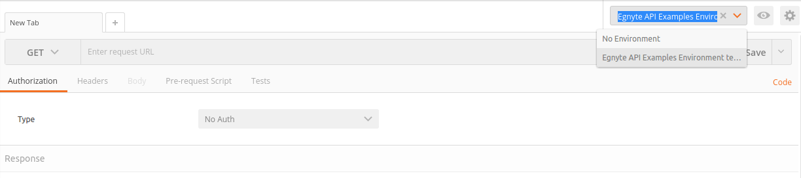
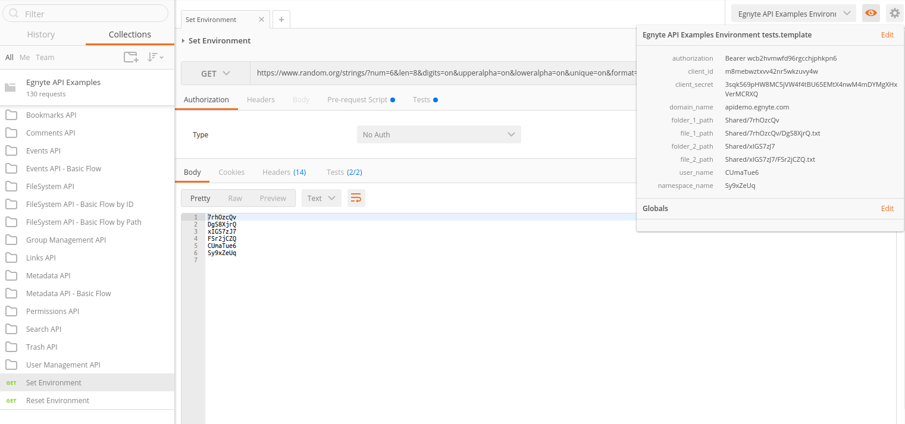
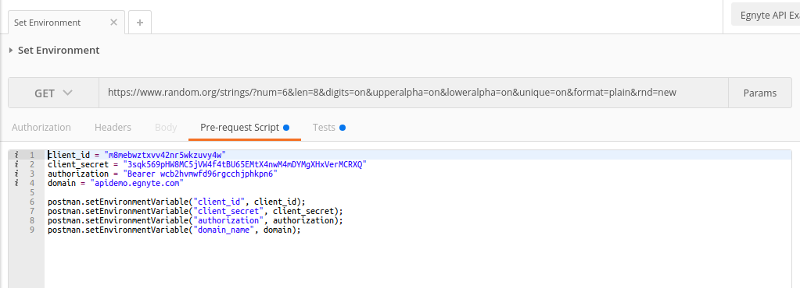
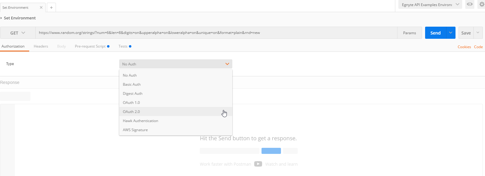

Public API examples library
We have created a large collection of examples you can use to see all request details and real responses.
The examples are running in Postman and you will need to have Postman installed.
If you are not familiar with Postman:
- Check docs
- Read about variables in Postman beacause we use them a lot in here
Or if you prefer video:
Getting Started
- Get collection and environment
- With a click of a button:

- or Download collection and Download environment and import them.
- With a click of a button:
- Set active environment
- It should be imported with 'Run in Postman' button 
- Download from link above
- Add new (read here)
- To set default credentials run 'Set Environment' at the bottom of the collection - it uses random strings for random folder paths 
- Go to some "Basic Flow" folders like "Filesystem API - Basic Flow" and try it step by step (use 'Reset Environment' for new random values)
- Read about API details on developers.egnyte.com
Custom credentials
- Go to 'Set Environment'
- Choose 'Pre-request Script' tab
- Change your credentials (to obtain authorization variable value read next section) 
- Send request!
Authentication
- Set your credentials in 'Set Environment' request in 'Pre-request Script' tab and send it (you don't need authorization value right now, leave it as it is)
- Click "Authorization" tab
- Choose "OAuth 2.0" from the list 
- Click 'Get New Access Token' button
- Copy the following without changing text to form in Postman
| Name | Value | |
|---|---|---|
| Token Name | {Choose name for your token} | |
| Auth URL | https://{{domain_name}}/puboauth/token?client_id={{client_id}}&redirect_uri=https://www.getpostman.com/oauth2/callback&response_type=code | |
| Access Token URL | https://{{domain_name}}/puboauth/token | |
| Client ID | {{client_id}} | |
| Client Secret | {{client_secret}} | |
| Scope | Egnyte.filesystem Egnyte.user Egnyte.group Egnyte.link Egnyte.permission Egnyte.bookmark Egnyte.launchwebsession | |
| Grant Type | Authorization |
Now you can use the obtained token - check "Custom credentials" section above.
More details: developers.egnyte.com